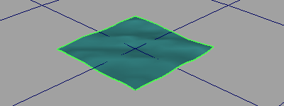

通过将预览平面添加到海洋着色器，可在不进行渲染的情况下查看波浪的置换。预览平面不会出现在渲染中，但当在场景中工作时会提供交互式反馈。
对其进行平移和缩放可预览海洋的各个部分。

预览平面实际上是高度场 - 将“置换”(Displacement)映射到“海洋”(Ocean)着色器的波高度的平面。有关高度场的信息，请参见高度场。
注： 如果从
“海洋”(Ocean)菜单中创建
“海洋”(Ocean)预览平面，则会锁定 Y 缩放，并获取所需缩放行为。如果直接创建高度场工具节点，并将其连接到海洋着色器，则不锁定 Y 缩放，且缩放 Y 将导致错误置换。
有关高度场节点的详细信息，请参见帮助 > 节点和属性参考(Help > Node and Attribute Reference)。
添加海洋的预览面片
- 选择海洋平面。
- 选择“流体 > 添加预览平面”(Fluids > Add Preview Plane)。Maya 将创建名为 oceanPreviewPlane 的预览平面。
- 在属性编辑器中，修改 oceanPreviewPlane（如有必要）。
- 平移和缩放平面可预览海洋的各个部分。